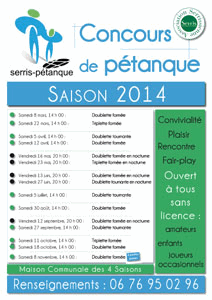

| |
|
|
|
| |
|
|
| |
 |
|
| |
Le R.C. Serris Val d'Europe section Féminine recrute
Venez rejoindre les équipes féminines du RC Serris Val d'Europe (football) pour la saison 2010-2011 :
- 1 équipe évoluant au niveau régional,
- 1 équipe pour les jeunes et les débutantes,
- 1 équipe en championnat de ligue U15.
Dans le cadre de son projet sportif, le RCS recherche des joueuses de toutes catégories, confirmées ou débutantes.
http://monclub.net/rcserris/
|
|
| |
|
|
| |
18 et 19 juin 2010, 20h30,
Ferme des Communes
Spectacle "l'oiseau vert"
|
|
par le groupe des adultes de Serris de l'AC Théâtre Val d'Europe Une pièce de Carlo GOZZI adaptée par Benno BESSON
Souvent considérée comme la plus riche des pièces de Gozzi, « L'Oiseau vert » mêle de façon harmonieuse élément fantastiques, profondeur des émotions, originalité et humour pour constituer le plus drôle et le plus inattendu des récits initiatiques. Mesdames et messieurs, bienvenue au royaume de Monterotondo, dans cette comédie loufoque, mélange de commedia dell'arte et de conte fantastique où tout peut arriver...
Entrée libre
Renseignements : act.theatre.val.d.eu@online.fr
|
 |
| |
|
|
| |
Samedi 19 juin 2010, de 10h00 à 14h00
San du Val d'Europe - Château de Chessy
Festi'RAM
Rencontre avec votre (future) assistante maternelle
Organisé par le SAN du Val d'Europe
|
|
- Que vous soyez usagers ou futurs usagers du RAM, participez au Festi’RAM !
- Enfants, parents et assistantes
maternelles, passez un moment au grand air
et hors du cadre professionnel
- Partager vos expériences et vos
savoirs sur la petite enfance
- Mieux comprendre le métier
d’assistante maternelle, au travers de
stands animés par des professionnels
- Pour encore plus de convivialité, venez
partager votre pique-nique !
SAN du Val d’Europe
Service de la vie locale
Relais Assistantes Maternelles
Tél : 01 60 43 66 26 - vielocale@valeurope-san.fr - www.valeurope-san.fr
|
 |
| |
|
|
| |
Lundi 21 juin 2010, place de l'Hôtel de Ville,
entrée libre
Fête de la Musique
|
|
19h00 > Paridé Canestraro Quintet (jazz/swing/blues)
www.myspace.com/canestraro
20h00 > Kanji (pop)
www.myspace.com/kanjitheband
21h00 > Julerades (rock français)
www.myspace.com/julerades
22h00 > Méline (reprises rock)
23h00 - 24h00 > Taki (chanson jazzifiante)
www.myspace.com/takiproject
|
 |
Retrouvez le programme complet de la Fête de la musique sur les 5 communes du Val d'Europe
et dans le Réseau des médiathèques.
|
| |
|
|
| |
Vendredi 25 juin 2010, 20h00
Hôtel de ville de Serris
Réunion publique :
l'avenir de notre territoire
|
|
Denis GAYAUDON, Maire de Serris et la Municipalité ont le plaisir de vous convier à une réunion publique, en présence des représentants de l’État, du SAN et de Disney :
le vendredi 25 juin 2010 à 20h00, à l’Hôtel de Ville de Serris.
Lors de cette réunion, vous seront présentés les :
- projet de développement de notre ville,
- projet d’agglomération du Val d‘Europe,
- projet Villages Nature,
- Programme d’Intérêt Général (programme arrêté par l’État qui fixe les objectifs et les orientations de notre développement).
Vous remerciant par avance de votre présence.
|

contact@mairie-serris.net |
| |
|
|
| |
Vendredi 25 juin 2010, 19h30
Maison Communale des 4 saisons
Concours de pétanque nocturne triplettes formées
Télécharger le programme complet de la saison 2010 de pétanque
Organisé par l'association Serris Pétanque
Renseignements : 09 51 76 70 86
|
 |
|
| |
|
|